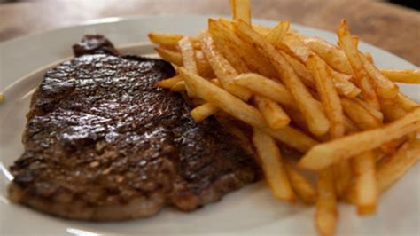

Recipe for Steak and Chips

Steak and Chips
This is a really simple guide to making the best steak and chips.
Ingredients
- 2 Large Maris Piper potatoes
- Vegetable oil
- 1 x 220g/8oz sirloin steak
- Salt and freshly ground black pepper
- Dijon mustard
Method
- For the chips, peel the potatoes and cut into whatever size you prefer. Wash well in cold water until the water runs clear, drain and pat dry with a clean teatowel.
- Fill a deep-fat fryer or a large, deep, heavy-bottomed saucepan two-thirds full with vegetable oil. Heat the oil to 140C–160C, using a thermometer to check the temperature if you're not using a deep-fat fryer. (CAUTION: Hot oil can be dangerous. Don't leave unattended.)
- Carefully place the chips in the hot oil and cook for 7–8 minutes or until just cooked through (without colouring). Remove from the oil using a slotted spoon, drain on kitchen paper and set aside to cool. You may do this a few hours in advance, keeping the chips covered, in the fridge.
- Meanwhile, to finish the chips, deep fry the chips in batches again in the oil at 180C for 2 minutes, or until crisp and golden brown. Drain on kitchen paper and season lightly with salt.
- For the steak, cut small slits across the line of fat on the steak and drizzle a little oil over the fat. Heat a griddle pan over a high heat. Salt the edge of the fat on the steak and place it onto the pan, standing it up on the fatty edge. Hold it there for a few seconds until the fat begins to run down the grooves of the grill; this is all the lubrication you will need to cook the steak.
- Allow the steak to fall over, season it very lightly with salt and plenty of pepper, then grill for 2 minutes on each side for a rare steak; 3 minutes for medium; and 4 minutes for well done. However, remember the thinner the steak, the less the cooking time.
- Once cooked, leave the steak to rest on a warm plate in a warm place (such as a very low oven) for a few minutes, so that the juices will settle evenly within the meat, while also allowing the meat to relax and become even more tender.
- Serve the steak and chips with Dijon mustard.
Back to Homepage